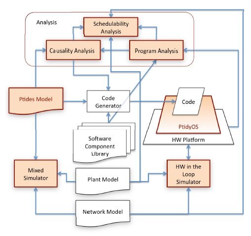
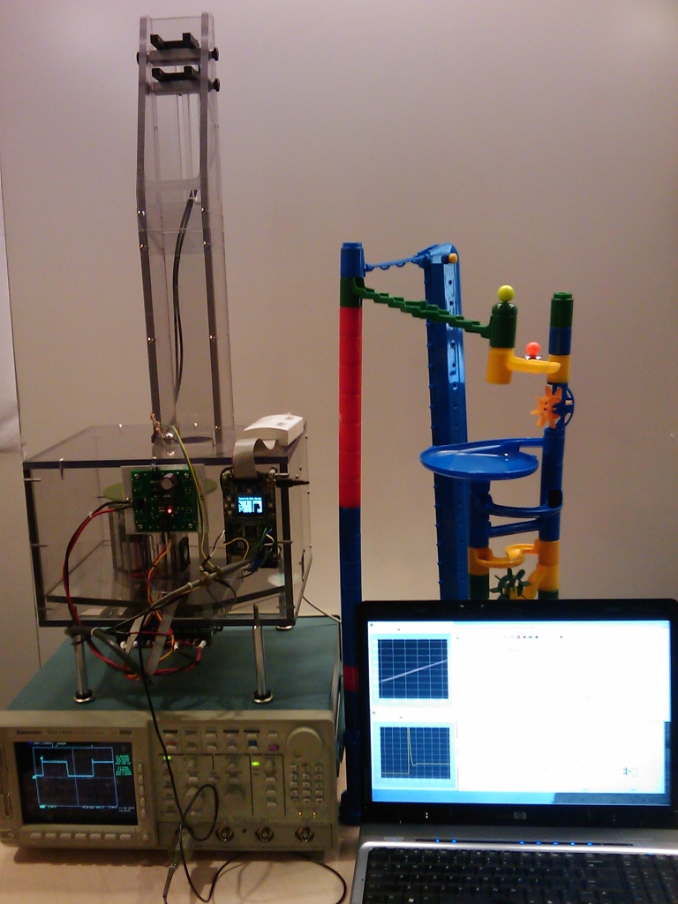

Jia Zou, Slobodan Matic, Edward A. Lee, John Eidson, Michael Zimmer and Ilge Akkaya
Center for Hybrid and Embedded Software Systems (CHESS), National Science Foundation 0720882 (CSR-EHS: PRET), National Science Foundation 1035672 (CPS: PTIDES), National Science Foundation 0931843 (ActionWebs), Army Research Office W911NF-07-2-0019 (SCOS), Air Force Office of Scientific Research FA9550-06-0312 (HCDDES MURI), Multiscale Systems Center (MuSyC), Robert Bosch GmBH, National Instruments, Thales and Toyota
The PTIDES project focuses on developing a programming model for real-time distributed systems and studying algorithms that can statically check whether a model meets the specified timing requirements over a network of distributed systems.
This programming model exploits time synchronization protocols such as IEEE 1588, which provide a global notion of physical time in distributed systems. PTIDES uses discrete-event (DE) models as programming specifications for distributed real-time systems. In the DE model of computation, software components communicate via time-stamped events. We refer to the values of the time stamps as "model time".” In [1], we use model time to define execution semantics and add constraints that bind certain model time events to physical time. We limit the relationship between model time and physical time only to those circumstances where this relationship is needed. Paper [2] studies the semantic properties important to implementation. It provides an execution model that permits out of order processing of events without sacrificing determinacy and without requiring backtracking. The PTIDES project workflow is shown in Fig. 1.
In [3] we describe a simulator for PTIDES built on Ptolemy II design environment. In [4,5] we review PTIDES with respect to distributed and multi-mode aspects of cyber-physical systems. By combining PTIDES with modal models, we illustrated timed mode transitions which enable time-based detection of missing signals to drive mode changes in the operation of common industrial applications.
Currently, we are developing a light-weight, real-time operating system (RTOS) called PtidyOS. PtidyOS is a single stack, event-based RTOS, which combines PTIDES semantics with earliest-deadline-first scheduling in order to ensure system responsiveness to the highest priority event. A code generator integrated from the Ptolemy II environment glues together the software components with PtidyOS to produce executable programs for each of the platforms in the network. Our prototype implementation of PtidyOS will run on a set of Luminary Micro microcontrollers with hardware assisted support for IEEE 1588 protocol. The tunneling ball device (Fig. 2) is used as a target application for PtidyOS. We chose this application due to its similarity to motor control applications and the combination of different types of event sequences (periodic, quasi-periodic, and sporadic) found in it.
Our future activities include work on several other components of the PTIDES framework as shown in Fig. 1. One of the challenges here is to provide schedulability analysis for the PTIDES programming model, which would allow for a static analysis of the deployability of a given application on a set of resources. To validate the PTIDES design environment for applications executing in a multi-platform system, we are building an experimental hardware-in-the-loop setup for applications drawn from the control of electric power systems. The evaluation will be based on experiments on a system of distributed micro-controllers emulating typical power system control and monitoring devices and an emulation of portions of the electric power grid based on conventional instrumentation. This emulation provides pairs of signals representing the outputs of voltage and current monitors found at critical points in the power transmission system. The magnitudes and phase of each pair can be varied independently as can the frequency. All frequencies and phases are relative to a single real-time clock which is synchronized to the real-time clocks in the monitoring and control devices. This allows us to emulate several generators each with different load conditions and frequency and to permit the generation of synchrophasor data.


More information: http://chess.eecs.berkeley.edu/ptides